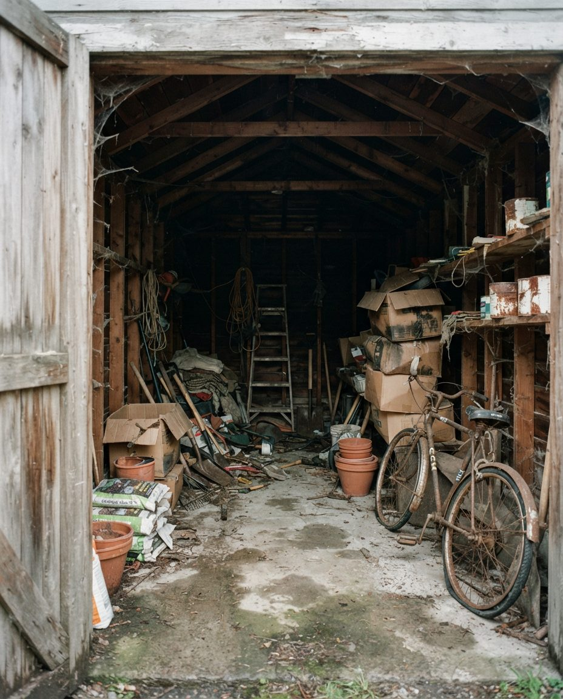
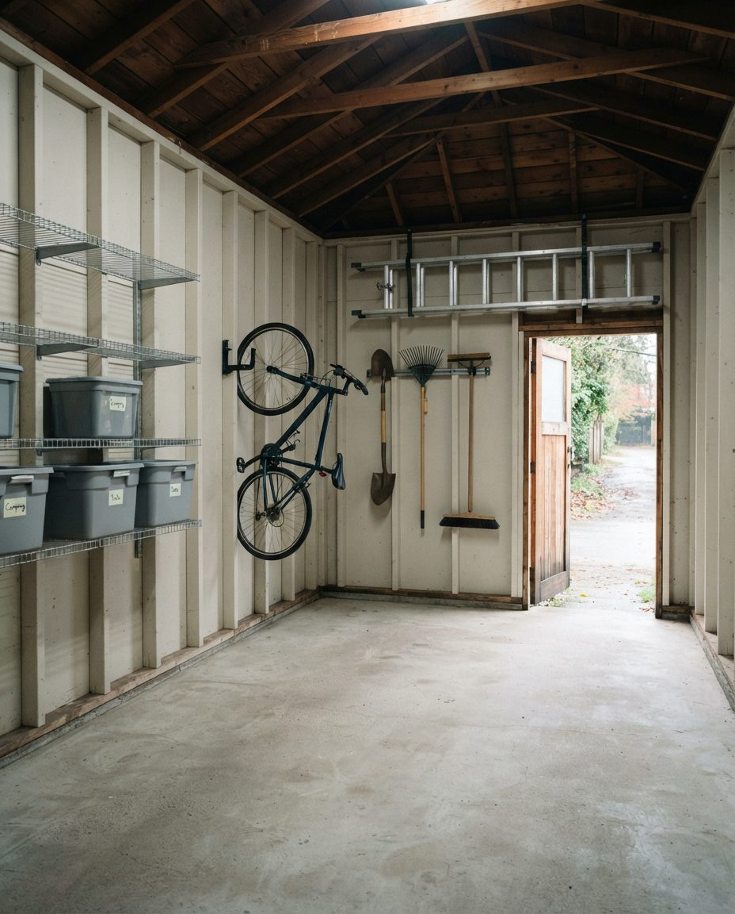

Most of Lakeview was built in the 1960s with the garage at the back of the lot, facing a lane. That lane is yours to deal with from November to March, because the City doesn't plow it. We clear Lakeview garages through the winter: we check the lane before we book, pull out what the cold damages, and leave the same day with the garage swept and nothing left in the alley.
For a quote, email inquiry@garagescape.ca four photos: the lane from your garage door looking each way, the inside of the garage from the door, and the rafters. Put your street in the subject line, plus any date you're working to (a listing, a possession, a builder's start). Or call (587) 804-9266, Monday to Friday 8 to 6 and Saturday 9 to 4.
Lakeview sits on the north shore of the Glenmore Reservoir, inside Glenmore Trail, Crowchild Trail and 37 Street SW, with Tsuut'ina Nation land directly to the west. The City annexed the land in 1956 and the community dates from 1962. Many of the first houses were built by Engineered Homes of Calgary. In the City's 2012 census Lakeview had 2,338 dwellings. The houses south of 66 Avenue, Lakeview Village, came later and are larger.
Read the listings on streets like La Salle Crescent, Lakeview Drive, Lockinvar Road or 58 Avenue and the same lines come up: bungalow, back lane, double detached garage or oversized single. That layout decides most of how a cleanout runs here. The garage is a separate, usually unheated building, it opens onto a gravel or paved lane, and it's out of sight from the house. Things go in there and aren't seen again for a long time.
What we find in them follows the neighbourhood. The Calgary Rowing Club and Calgary Canoe Club are at the south end of the community, so paddles, life jackets and the odd hull come up often. The City only runs boating on the reservoir from May 1 to October 31 and doesn't rent its boat stalls or moorings over the winter, so by November that gear is home. Add golf bags, three or four sets of skis, bikes nobody has ridden since the kids moved out, and paint from every room the house has had. If your garage is on the Lakeview Village streets with an attached front-drive garage, the job is closer to our Pump Hill and Bayview page across the water.
The City of Calgary's winter maintenance FAQ says it directly: back lanes and alleys aren't part of its winter maintenance. Nobody clears them on a schedule, and after a chinook the melt in the afternoon refreezes overnight into ruts. A truck that can reach your garage door in October may not be able to in January.
That's why the first photos we ask for are of the lane, not the garage. Here's what we look for and what we do about each:
| What the lane photo shows | What it means for the day |
|---|---|
| Bare or packed and flat | The truck backs up to the garage door and we load straight from the floor. This is the fastest job we do. |
| Frozen ruts after a chinook | We book late morning rather than first thing, after the sun has been on the lane, and bring sand. If the ruts are deep, the truck stays at the lane entrance and we carry the last stretch on dollies. |
| A ridge of plowed snow across your garage door | You clear the apron in front of the door the day before, or we do it when we arrive and it's part of the quote. Either way we tell you which beforehand. |
| A neighbour's trailer, car or bin pad narrowing the lane | We plan a smaller truck and more trips, or ask whether the neighbour can move it for two hours. We don't block anyone's garage door while we load. |
| No usable lane at all | We park on your street and carry through the yard gate. Slower, and the quote says so before you book. |
| Collection day | If your black, blue and green carts go out to the lane, we leave a clear path for the City truck to reach them. |
If the job can't wait for a better lane, our same-day garage cleanout page explains how short-notice jobs work around landfill hours and Sunday closures.

An illustration of an older detached garage, not a photo of a Lakeview client's garage. Detached garages this age often have no insulation and a slab that sheds dust, so we sweep twice: once when the floor is first clear, and again after the rafters come down.
An attached garage borrows some heat from the house. A detached one in Lakeview sits at the outdoor temperature most of the winter, and every chinook warms it up again, so a lot of what's stored in it has frozen and thawed several times before anyone looks at it. When we clear a detached garage in November or December, we sort these first:
| Item | What the cold does | Where it goes |
|---|---|---|
| Latex paint, water-based stain, caulk and adhesives | Water-based products can separate or go lumpy once frozen. If it's been out there a few winters, it's rarely worth keeping. | Fire Station #20 household hazardous waste drop-off, in the original cans. Free. |
| Solvents, oil-based paint, pesticides, pool and hot tub chemicals | Mostly unaffected by cold, but containers crack and labels fade with age. | Fire Station #20. Never mixed or poured together. |
| Propane cylinders under 30 lb | Fine in the cold, but they shouldn't go in a garbage load. | Free at the fire station drop-off (propane is accepted 8 to 5). |
| Photos, papers, books and fabric in cardboard boxes | Frost and condensation on a thaw soften the bottom row of boxes first. | The set-aside pile, then into the house or a heated storage unit if you're keeping them. |
| Bottled drinks, canned food, glass jars of liquid | Burst or split once frozen, and the mess draws mice. | Emptied and recycled, or landfill if broken. |
| Old fridge or chest freezer | Often running in an unheated garage for years, or unplugged with food still in it. | City landfill, with the $17 refrigerant fee plus its weight. |
| Tools, bikes, skis, paddles, tires | Fine where they are. | Kept, donated, or tires to the landfill free when they're separate. |
The free drop-offs only stay free if they're kept separate. If paint or electronics arrive at the landfill mixed into garbage, the City charges the whole load. So the sorting happens in your garage, before anything goes on the truck.
Putting things out behind the garage with a FREE sign is a Calgary habit, and in a lane neighbourhood it's the first thing people try. The trouble is what doesn't get taken. The City's untidy property bylaw says household items, furniture, appliances and garbage shouldn't be visible from outside the property, an outdoor fridge or freezer has to be locked or have its door removed, and fines run from $100 to $500. Neighbours report it through 311.
If you'd like to offer things to the neighbours first, keep the giveaway pile inside the garage with the door down, post it on your community group, and give it a deadline. On cleanout day, whatever's still there leaves with everything else, and nothing gets left outside.
Some Lakeview owners are clearing an old detached garage because they want something else on that part of the lot, usually a backyard suite over a new garage. Calgary's zoning and suite rules changed during 2026, so check with the City what's allowed on your lot before you spend anything on design. One requirement the City states plainly: a suite above or attached to a garage needs fire separation between the two, which is one reason many owners rebuild rather than convert.
If the old garage is coming down, this order saves time:
After the build, the cleanup of drywall dust, offcuts and packaging is a separate job, covered on our post-renovation garage cleanup page.
We price from your photos, or from a walkthrough on a big garage, and the price is agreed before the truck is booked. On Lakeview jobs these are the things that move it:
We carry $2 million in general liability insurance and can send the certificate to your builder or realtor. If the garage is part of a parent's estate, our estate garage cleanout page covers how we handle papers and valuables. If you're selling, see garage cleanout before selling for timing around listing photos. For a comparison of bins, hourly help, junk trucks and full cleanouts, see our Calgary garage cleanout page.

An illustration of a cleared detached garage, not a photo of a Lakeview client's garage. If you want shelving or storage put in once it's empty, our garage organization team handles that side.
Lakeview and Lakeview Village, between Crowchild Trail and 37 Street SW on the north shore of the reservoir. Residents east of 30 Street can also belong to the North Glenmore Park Community Association. Other lane garages closer to downtown are on our Mount Royal and Elbow Park cleanout page. The laneless streets on the east side of the reservoir are on Britannia, Bel-Aire and Mayfair. If the garage needs more than a clear-out because the volume has got out of hand, our hoarding garage cleanup page explains how we handle it quietly.
Usually, but we need to see it first. The City of Calgary doesn't include back lanes in its winter maintenance, so a Lakeview lane in January can be anything from bare gravel to frozen ruts. Send a photo of the lane from your garage door looking both ways. If the truck can't get in safely, we park on the street and carry through the yard gate, which takes longer, and we tell you that before the day rather than on it.
Decide what's coming back into the house before anything goes on a truck, then sort the rest into donate, hazardous and landfill. In a detached garage, start with anything that can't take the cold (paint, liquids, photos and papers) because those are the things the winter has been working on. Leave the rafters until the floor is clear so there's room to bring things down safely.
A crew empties the garage in one visit: sorting with you, loading, hauling to donation, the City hazardous waste drop-off and the landfill, then sweeping the floor. A bin rental or a junk pickup only takes what you've already sorted and carried out. Our Calgary garage cleanout page compares the options.
Separate the free streams before anything is weighed. The closest City household hazardous waste drop-off to Lakeview is Lincoln Park/Garrison Green Fire Station #20 at 2800 Peacekeepers Way SW, open 8 a.m. to 6 p.m. every day and free for residents. Tires and electronics go free to the landfill if they're kept apart from garbage. Only the mixed garbage pays the scale rate.
The City of Calgary's 2026 residential rate is a flat $25 for a load under 250 kg. Over that, the whole load is weighed and charged at $113 a tonne for basic garbage. Every fridge, freezer or air conditioner adds $17 for refrigerant on top of its weight. All three City landfills are closed on Sundays.
Not for the whole day. We need a walkthrough, in person or by video call, and a way into the garage: a door code, a key left with a neighbour, or the man door unlocked. Anything personal or that might be valuable is set aside and photographed, and stays with you until you've answered.
Not while Calgary is under Stage 4 outdoor water restrictions, which started November 4, 2026 for the Bearspaw South Feeder Main connection. We dry sweep after the cleanout and can book a floor wash for after the City lifts the restrictions. Our garage floor cleaning page covers that visit.
Stand at your garage door and take one photo each way down the lane, then one of the inside and one of the rafters. Add your street and any date you're working to, and we'll come back with a price and a plan for getting the truck in.
Lakeview, Lakeview Village and the rest of southwest Calgary.